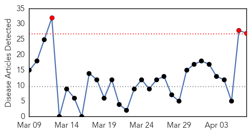
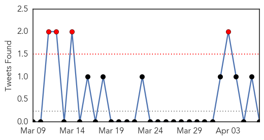
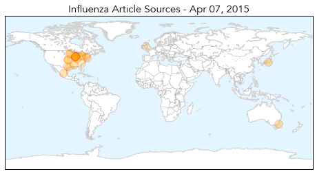

Toggle navigation
Early Warning
Daily Alerts
Influenza
Apr 07, 2015
Compare to:
-
Dengue Fever
Hemmorhagic Fever
Mold/Fungal Infection
Meningitis
Pertussis / Whooping Cough
Middle East Respiratory Syndrome
Cholera
Hepatitis
Chikungunya
Yellow Fever
Bubonic Plague
West Nile Virus
Swine Flu
Ebola
Measles
Unknown
Mumps
30 Day Trends
Web: 3
alerts
, 0
warnings
Twitter: 0
alerts
, 0
warnings
Top Articles:
0.982
Minnesota Turkey Farms Report Bird Flu Cases
0.978
‘Women key to family health’
0.965
Dog Owners Warned About Surge in Canine Flu Cases
0.965
Dog Owners Warned About Surge in Canine Flu Cases
0.960
E Singhbhum plans to focus on hygiene to check JE spread
0.940
Wild waterfowl may be bird flu source
0.938
Flu vaccinations delayed
0.932
Canine flu outbreak isolated to Chicago-area
0.919
In fight against avian flu, state looks for diseased birds
0.890
Local dog owners encouraged to protect pets from canine flu
0.844
Over 1,000 Dogs Sickened With Outbreak
0.834
dog flu puts owners on alert on the north shore
0.826
Bird flu spreads to Minnesota's Kandiyohi County
0.825
Multi-county drill to train organizations on handling outbreak s - KLTV.com-Tyler, Longview, Jacksonville, Texas
0.801
Bird Flu Confirmed on Ontario Poultry Farm
0.772
Rare canine flu outbreak hits Chicago, leaving five dogs dead, sickening more than 1,000 others
0.751
April 7, 2015 Archives
0.751
April 6, 2015 Archives
0.751
April 6, 2015 Archives
0.751
April 6, 2015 Archives
0.751
April 6, 2015 Archives
0.735
KDA lifts poultry movement restrictions in eastern Kansas
0.688
Veterinarians Warn of Near-Epidemic Dog Flu in Chicago
0.660
Bird flu war intensifies
0.572
Avian flu confirmed in Canada
0.557
Plainfield Park District advises caution at dog parks due to canine flu
0.545
Drug-resistant superbug outbreak could kill 80,000
Top Tweets:
No tweets found for Apr 07, 2015
Web/News Articles

Tweets

Article Locations

Article Confidences